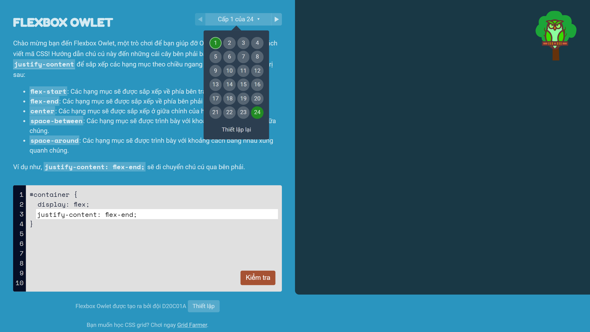
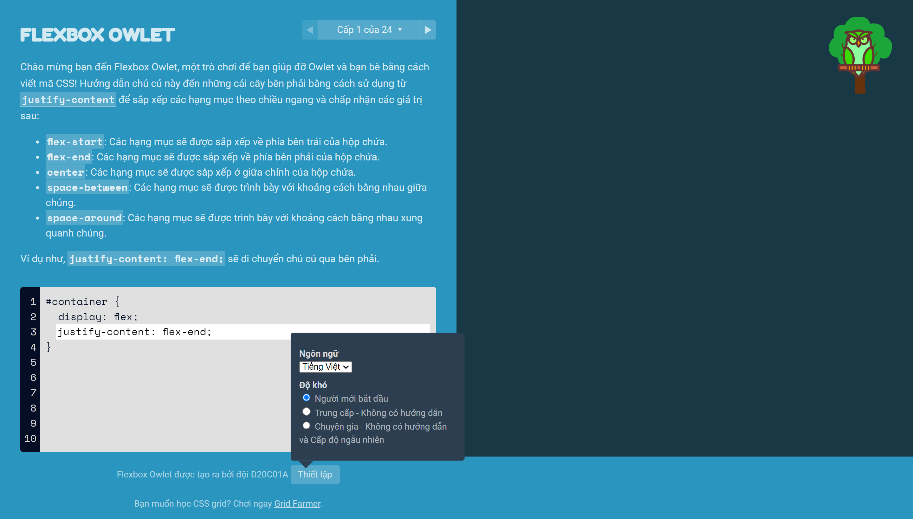
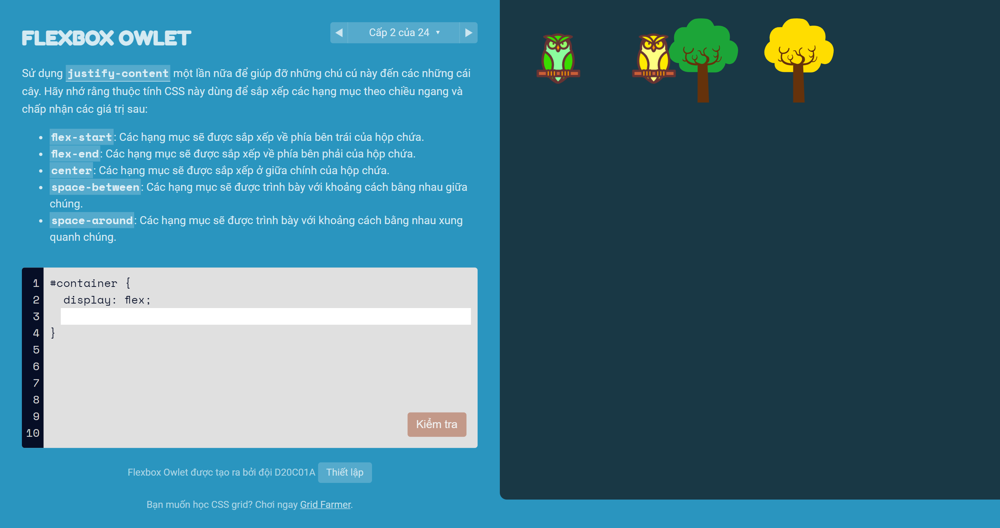
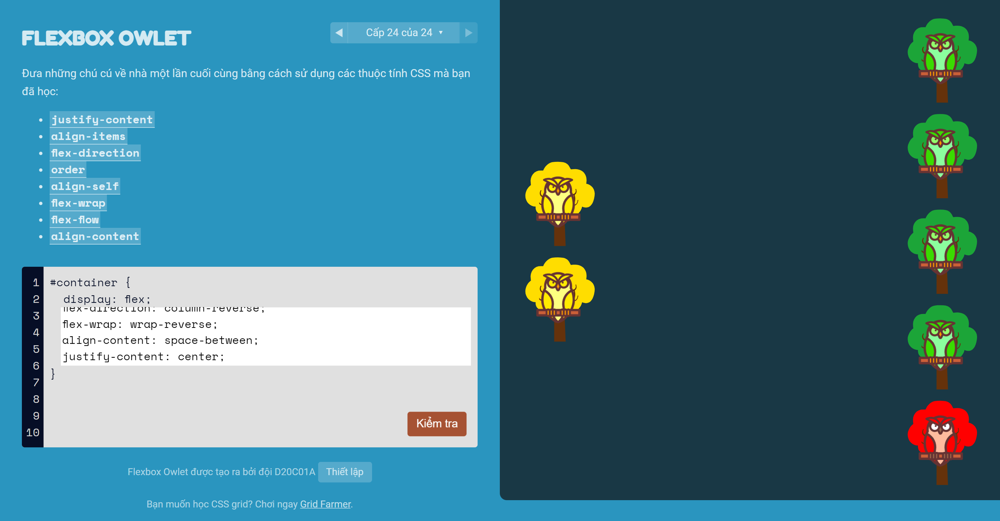

FlexBox Owlet
Những chú chim cú non ham chơi đến nổi quên luôn đường về nhà của
mình. Liệu rằng bạn có sẵn sàng giúp đỡ những chú chim non nớt này
không ?
Bạn chỉ cần giúp những chú chim ấy về với đúng cây cùng màu là được.
Hãy cùng nhau giúp đỡ những chú chim đáng thương bằng vũ khí của chúng
ta - CSS Flex Box!
Chúng tôi làm trò chơi này cho bạn
1. Bạn thường loay hoay cố gắng tìm ra sự kết hợp các thuộc tính của
Flex Box nào khiến trình duyệt thực hiện những gì bạn muốn.
2. Bạn muốn tạo các bố cục trang web phức tạp mà không phải liên tục
nhìn vào trang web sau mỗi lần nhấn Cmd/Ctrl+S trong trình chỉnh sửa
mã.
3. Bạn đã cố gắng tìm hiểu Flex Box qua các video hướng dẫn và các bài
viết nhưng vẫn chưa hiểu hết cách thức hoạt động của một số phần trong
đó
4*. Hoặc, nếu bạn là bậc thầy về CSS Flex Box, chúng tôi có một số thứ
thú vị dành cho bạn (đọc thêm).
Đây có phải là bạn? Sau đó, bạn chắc chắn muốn học Flex Box hoặc cải
thiện các kỹ năng hiện tại của mình. Chúng tôi có một tin tốt cho bạn…
một tin rất tốt!
Tìm hiểu Flex Box bằng cách chơi trò chơi
Không còn những video, hướng dẫn và khóa học nhàm chán nữa. Tìm hiểu
Flex Box theo một cách hoàn toàn mới, thú vị, hiệu quả và mang tính
cách mạng. Bằng cách chơi trò chơi viết mã Flex Box!
Bao gồm những gì:
+ 24 cấp độ mã hóa dạy cho bạn Flex Box

+ 3 chế độ chơi: dễ, trung bình và khó (dành cho bậc thầy css flex
box)

+ Môi trường tương tác và vui chơi khiến việc học như chơi.

Bạn sẽ học được gì
Bạn sẽ hoàn toàn học CSS Flex Box một lần và mãi mãi.
1. Tìm hiểu Flex Box là gì
2. Cách sử dụng Flex Box trong dự án thực tế
3. Tìm hiểu cách sử dụng và hiểu cách hoạt động của tất cả các thuộc
tính hộp flex phổ biến (justify-content, align-items, align-content,
flex-direction, flex-flow, order, align-self, flex-direction, flex)
